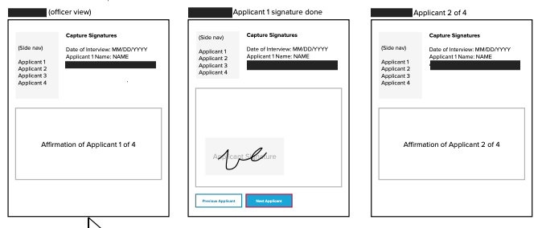

Overview
HMW Statment
How might we allow the primary refugee applicant review their application for themselves and their family member(s) and provide a digital signature?
Process
How I approached the work
Field Observation
Traveled to offices to observe the "wet" signature collection process. Observed workflows and identified user pain points in context.
Facilitation
Led workshops to surface assumptions, needs, and constraints.
Wireframes & Design Patterns
Mapped out low and high-fidelity wireframes to quickly pair with developers on technical fesibility. Utilized UI components from design library.
Pilot & iteration
Validated ideas in a pilot setting and refined the experience based of feedback.
Artifacts
Design moments

Low-fidelity wireframe of iPad application screens
Findings
What made this workflow unique
Paper
Officers often communicated through interpreters, which changed pacing and comprehension.
Colorful Cues
The button colors streamlined communication between the officer, interpreter, and applicants — Instructing click "red” or “blue” kept the signature process moving smoothly.
Device Hesitation
Applicants were initially nervous to interact with the iPad, worried they might make a mistake or damage it.
Biggest Challenge
Paper convenience over software
Due to internet lags, officers found themselves priting the applications, having applicants sign, and uploading the signed documents to not waste time and continue moving forward with the refugee interview process.
Validating Assumptions
Vertical orientation preferred
There was an inital assumption that officers were utilizing the iPad in a landscape orientation so that refugee applicants had ample room to sign their names. This was not always the case. Officers presented the iPad in portrait orientation to display more reading view of the applicant’s form.
Impact
What changed
Users received more cues and clearer interaction support.
Teams aligned around launch needs, logistics, and mitigation.
The solution fit existing requirements while improving usability.